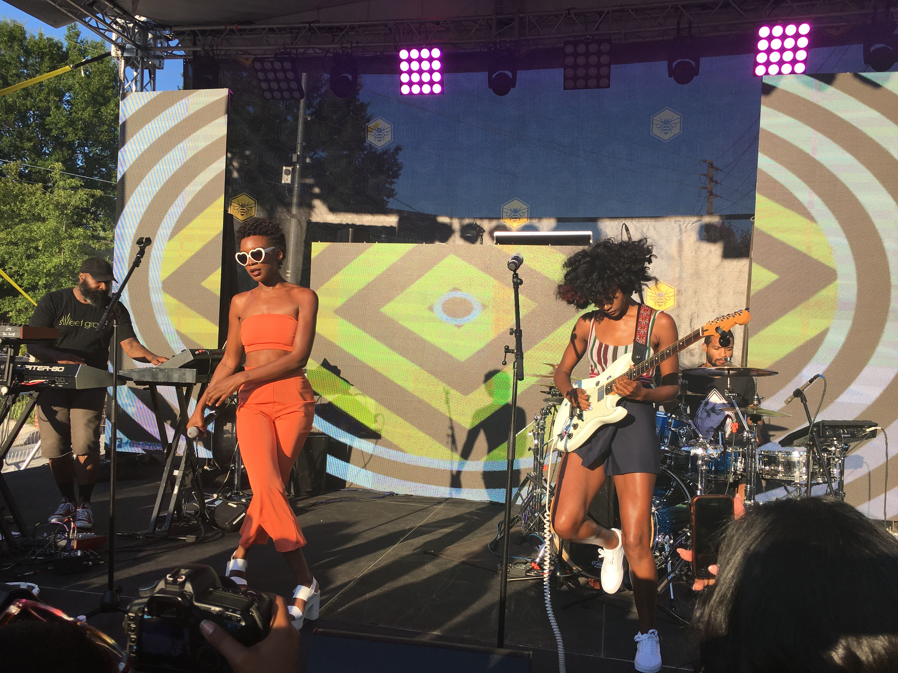
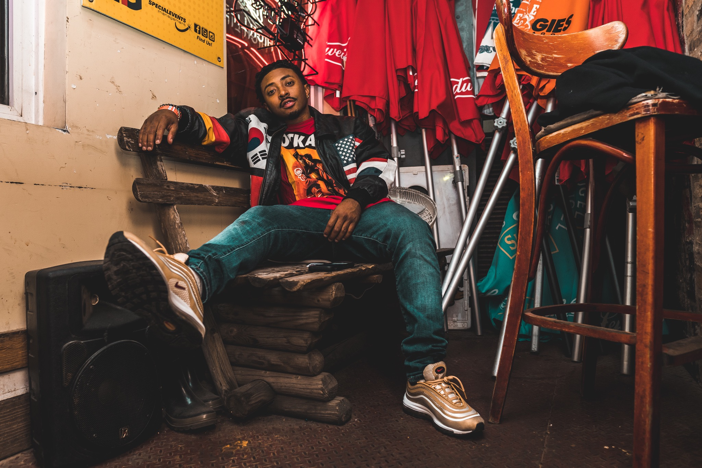
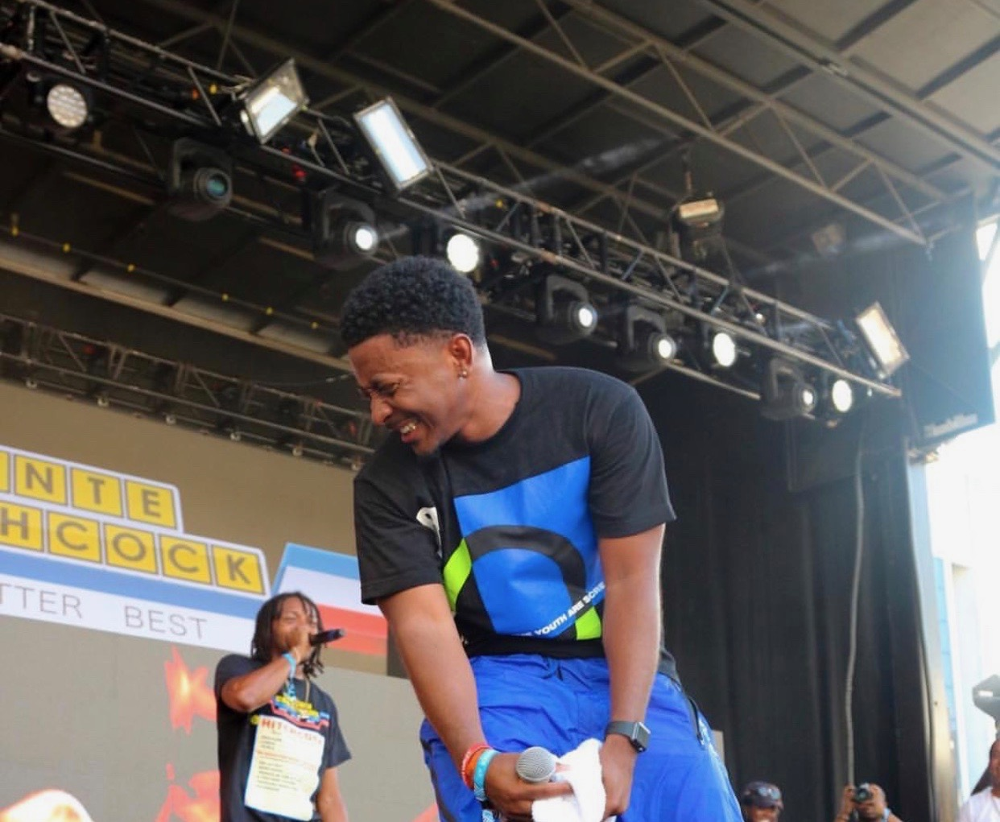
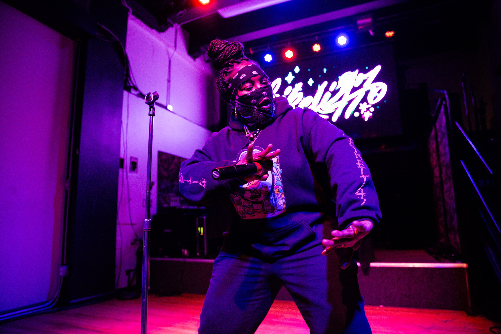

projects
Jack Daniel’s Neighborhood Flavor
The Jack Daniel’s Block Party was the first event of the Neighborhood Flavor Series in Atlanta. The July day party was centered around food, drinks, community, and music. As Production Manager for St. Beauty, Felicia managed all technical sound needs for their headlining performance. Lighting queues, visual assets, sound equipment, backline, and stage setup were all her responsibility to ensure the success of their show.
Visit WebsiteWisdom Is Power Tour
This was her first ever tour and role as a full time manager. This was a 3 week, 15 date tour that took her to all 3 coasts. Deante Hitchcock is a prolific Atlanta rapper that Rapsody invited on tour to be one of her opening acts. Starting November 29th, Felicia drove Deante’s band and crew to NYC for the first east coast show of tour at S.O.B.’s. It was sold out with a line out the door. Fans were craning their necks hoping to catch a glimpse of Deante, Rapsody, and Ninth Wonder before the show. This winter tour was 90% sold out before the tour even started. The art of lyricism and real hip-hop was showcased on this run. Felicia managed to successfully get Deante’s team to all venues and ended every night with new fans. Laila’s Wisdom and So Much For Good Luck are albums you need to put your ears on.
Visit WebsiteDirty Computer Tour w/ Janelle Monae & St. Beauty

Janelle Monae’s 28-date Dirty Computer Tour kicked off in Seattle on June 11, 2018. Felicia was Tour Manager for St. Beauty, the opening act for Janelle every night of tour. This two and a half month North American and Canadian run took them cross country. Her duties included planning all routing and transportation from city to city, hospitality, lodging for band and crew, communicating all show details to band and crew, running the day of show itinerary, and ensuring all production needs were met. As lead she must keep everything running smoothly and look after all finances.
Visit WebsiteA3C Festival
The 14th annual A3C festival was a celebration of hip-hop that had a lineup that consisted of performers Wu-Tang Clan, Lil Wayne, J.I.D, Deante Hitchcock, and much more. Deante Hitchcock performed on the main stage and Felicia performed duties as his Tour Manager. He had a 30 min slot with his DJ. As Tour Manager she handled all advance correspondence with the A3C Stage Manager, Artist Liaison, Program Director, Deante, his manager, and all crew leading up to the festival. In addition, she handled the run of show, all audio/visual requirements, technical specs, scheduling, equipment inventory, credentials, hospitality, and communication on site at this outdoor festival.
Visit WebsiteThe Acrylic Tour
Leikeli47's debut headlining Acrylic Tour was monumental for us both. I had the pleasure of being her tour manager on this 33 date US, Canada, and western Europe run. Managing a team of 4, supporting 2 openers, their teams, over 14 unique local openers, and a press team for the first time was a juggling act. I handled every aspect of her live show and professional schedule with procession to ensure that her wishes were me to the best of my ability. The tour started in March 2019 and officially ended in July with 17 sold our shows before 14.5 thousand attendees. Boosting her social media presence exponentially. Most recently since tours conclusion I've been working with 47 on one-off shows domestically and abroad.
Visit Website